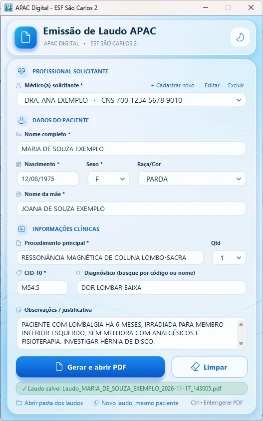
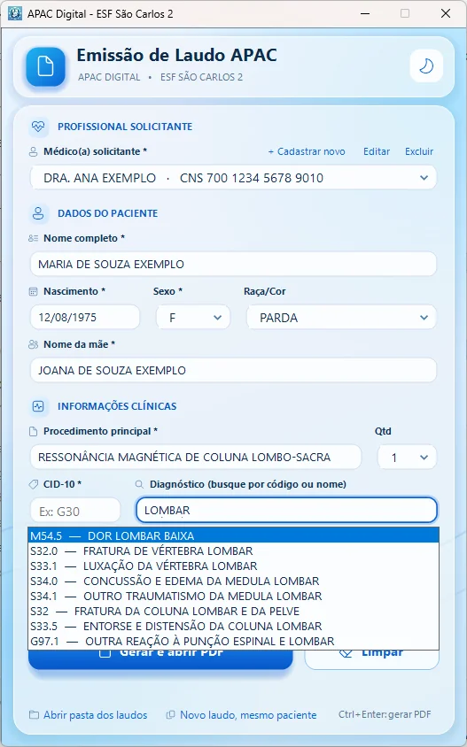
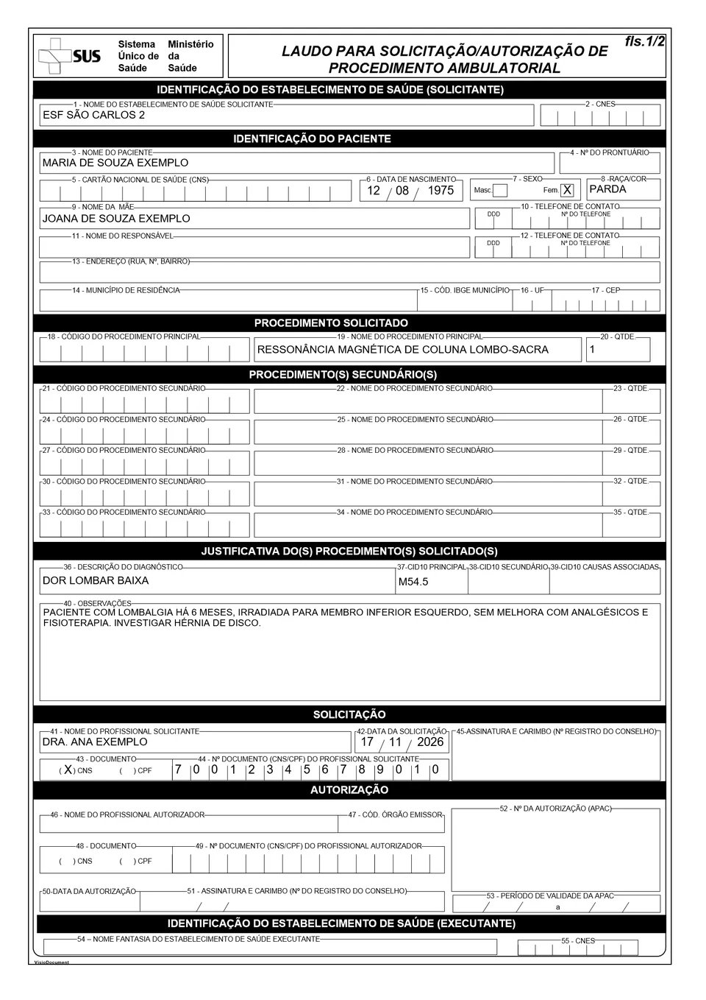

APAC Digital.
Um problema repetitivo da rotina clínica transformado em uma ferramenta para preencher, validar e gerar laudos de APAC do SUS.Turning a repetitive clinical workflow into a tool for preparing, checking and generating Brazilian public healthcare authorization forms.

Imagem do projeto. Dados fictícios utilizados na demonstração.Project screenshot. Fictional data used for demonstration.
O problema surgiu no consultórioThe problem started in clinical practice
Rotina fragmentadaFragmented workflow
O preenchimento manual de laudos APAC exigia reescrever dados, buscar códigos CID-10 e adaptar justificativas ao formulário oficial. Erros de preenchimento e campos ausentes podiam provocar retrabalho.Handwritten APAC forms required repeatedly entering details, finding ICD-10 codes and fitting clinical justifications into the official form. Missing fields and entry errors could lead to rework.
Objetivo do produtoProduct objective
Concentrar as entradas necessárias em uma interface simples, reutilizar informações profissionais e gerar o PDF no formato requerido, sem depender de internet ou de um servidor externo.Bring necessary inputs into a simple interface, reuse practitioner information and generate the required PDF format without relying on internet access or an external server.
Menos etapas manuais, mais consistênciaFewer manual steps, more consistency
Identificar profissional e pacienteIdentify clinician and patient
Reutilização do cadastro profissional; validação do CNS.Reuse professional details; validate Brazilian health ID.
Registrar pedido e diagnósticoEnter request and diagnosis
Busca de CID-10 por código ou nome e preenchimento da justificativa.ICD-10 lookup by code or name, plus clinical justification.
Revisar camposReview fields
Avisos para campos ausentes ou texto que não cabe no formulário.Warnings for missing fields or text that exceeds document space.
Gerar e organizar PDFGenerate and organize PDF
Laudo preenchido, salvo localmente e aberto para impressão.Completed form saved locally and opened for printing.
Detalhes que importam na práticaDetails that matter in practice


Decisões de implementaçãoImplementation decisions
O que está demonstrado, e o que falta medirWhat is demonstrated, and what remains to measure
Evidências disponíveisAvailable evidence
O repositório contém código-fonte, imagens, roteiro de execução, testes automatizados descritos e instruções para gerar o instalador. Esses artefatos permitem examinar a implementação.The repository provides source code, screenshots, instructions, documented automated tests and installer build steps. These artifacts allow independent review of the implementation.
Resultados ainda não quantificadosOutcomes not yet quantified
Ainda não há dados publicados de economia real de tempo, redução de erros, número de usuários ou adoção institucional. A próxima validação é medir esses indicadores em testes controlados, sem expor dados de pacientes.Published evidence does not yet quantify time savings, error reduction, user counts or institutional adoption. The next step is to measure these outcomes in controlled tests, without exposing patient data.
Limitações e responsabilidade. O APAC Digital apoia o preenchimento do formulário e não substitui a avaliação do profissional. A distribuição do iText precisa observar sua licença AGPL ou comercial. O software não foi apresentado aqui como dispositivo médico validado.Limitations and responsibility. APAC Digital supports form completion and does not replace clinician review. Distribution involving iText must comply with its AGPL or commercial licensing. This case study does not claim the software is a validated medical device.
De um problema clínico a um produto utilizável.From a clinical problem to a usable product.
Este projeto representa meu interesse em conectar conhecimento médico, desenvolvimento de software e melhoria de processos na saúde.This project represents my interest in connecting medical expertise, software development and better healthcare workflows.